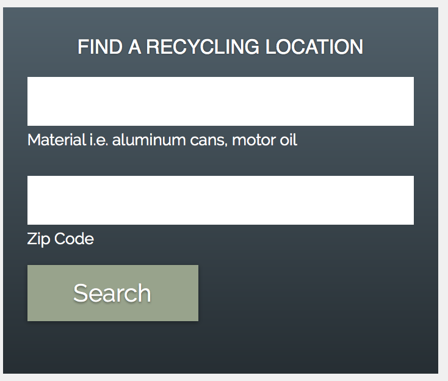

How to Take Action
People who are aware and educated of the benefits of recycling, and how recycling would help reduce waste pollution, save energy, and conserve natural resources would care about recycling. According to the DNR, 94 percent of Wisconsin household recycle and feel it is worthwhile, 58% recycle at least as much as they did a few years ago, and 32% are recycling more (Recycling Facts and Figures, 2016). Most people are aware that recycling is beneficial towards the environment, but the most common reason why people do not recycle is due to lack of access or inconvenience (Schumaker, 2016). With more awareness and education on how recycling can help the community, economy, and environment by saving money, energy, and natural resources, changes can be made so that recycling could be accessible in all locations.
What you can do:
- Avoid using plastic bags entirely; opt for paper bags or BYOB (bring your own bag) - keep a set of bags in the trunk of your car so you can always bring your own reusable bag.
- Recycle all of the basics: plastic bottles, metal cans, all (non-food related) paper and cardboard
- Have a compost bin for compostable materials such as food waste and soiled paper waste
- Add and display standardized labels on your bins, so it is easy and explicit to everyone to recycle the right way
- “When in doubt, throw it out” into a trash bin to avoid contaminating the recycling bin
- Bring your plastic bags to a local retail or grocery store that recycles plastic bags
- Clean your glass jars and remove metal lids before putting it in the recycling bin
- Flatten all cardboard boxes
- Bring all used batteries to a recycling facility or store that recycles batteries
- Print out the “NO recycling bin” chart provided on the bottom of the page and put it on the wall near your bins to recycle the smart way
The key to solving our pollution and recycling problems is to enhance recycling participation in day to day consumers by being more explicit about what can be recycled, where to recycle, and the contributions they are making to the world when they recycle.
Never put these into recycling bins:
- Food
- Liquids
- Straws
- Styrofoam
- Aluminum Foil
- Plastic Utensils
- Clothing
- Electronic Waste
- Dry Tissue or Paper Towel
- Plastic Bags
Why Recycling is Important:
Environmental Effects
- Soil Contamination:
- Poisons valuable land resources and damages food production capability
- Direct impact on human health
- Surface Water Contamination:
- Chemicals break down and pollute water
- Eutrophication
- Acid Rain:
- Kills trees
- Pollute bodies of water
- Contaminates Soil
- Great Pacific Garbage Patch:
- Kills marine wildlife
- Destruction of underwater biomes
- 1.6 million square kilometers
- Air Pollution:
- At risk people can be significantly impacted by burning of otherwise recyclable materials
- Methane
Economic Effects: Prevention
- Energy Opportunities or Pollutors?:
- Landfills: traps methane released from breakdown of waste
- Incineration: More efficient than landfills
- 35% less greenhouse gas compares to landfill trapping method
- Pollute the environment
- Job Growth:
- Currently about 757,000 jobs in the U.S. alone (EPA, 2016)
- $36.6 billion in wages
- $6.7 billion in tax revenues
- https://www.epa.gov/recycle/recycling-basics
- Recyling conserves expensive natural resources:
- Wood, metals and minerals
- Aluminum, for example, requires 96 percent less energy to make from recycled cans than it does to process from bauxite.
- (https://www.popularmechanics.com/science/environment/a3752/4291566/)
- Newspapers and paper towels, Steel cans, Aluminum, plastic, and glass soft drink containters, and Plastic laundry detergent bottles are examples of items that contain recycled material
- (https://www.epa.gov/recycle/recycling-basics)
Everyday we must make the conscious decision into what we recycle. By educating ourselves in what can and can’t be recycle, we can promote the efficiency of recycling centers and help the planet. Here are a list of things you can put in a recycling bin and those you cannot. For items and materials you cannot recycle normally, there are many resources throughout your local community to responsibly dispose of them.
If you are ever uncertain about if or where to recycle an item, A helpful resource is Earth911.org. By typing in your zip code and the item you want to recycle, you can find a recycling location in seconds.
https://earth911.com/recycling-center-search-guides

What you can and can't recycle:
What you can recycle (in your recycling bin):
- Paper, Cardboard, and Containers:
- Aluminum containers
- Bi-metal containers (i.e. containers made from a combination of steel and aluminum)
- Corrugated cardboard or other containerboard
- Glass containers
- Magazines and other materials printed on similar paper
- Newspaper and other materials printed on newsprint
- Office paper
- Plastic containers #1 and #2 - milk jugs, laundry detergent bottles, soda and water bottles, etc.
- Office paper
- Steel containers (tin cans)
- Plastics
- Plastic shopping bags
- Plastic newspaper bags
- Produce bags
- Stretch film around furniture or electronics
- Plastic packaging on paper products
- Dry cleaning bags
What you can't recycle:
- Electronics: can be dropped off at Wisconsin E-Cycle sites (list of registered sites by county: https://wisconsindnr.shinyapps.io/EcycleCollectorSite/)
- Televisions
- Computers (desktop, laptop, netbook and tablet computers)
- Desktop printers (including those that scan, fax and/or copy)
- Computer monitors
- Other computer accessories (including mice, keyboards and speakers)
- DVD players, VCRs and DVRs Fax machines
- Cell phones
- Major appliances: free pickup and $35 dollars in return from Focus on Energy’s Appliance Recycling Program https://focusonenergy.com/appliance?utm_campaign=fridge&utm_medium=vanity&utm_source=vanity-url
- Lead-acid batteries: can be usually be taken to any retailer that sells them
- Oil filters/absorbents and waste oil: many businesses that offer oil changes will accept them
Summary:
There is little to no argument that recycling is extremely important for our environment. We can not recycle at the cost of the earth, wildlife and our own safety. The debate continues on whether recycling is worth it economically however. It is more cost efficient to dump trash (basically free), however, recycling has indirect benefits economically. First, thousands of jobs can be created through direct recycling efforts but also through technological growth. Many items listed above can be made with recycled materials which save energy and money for manufacturing companies resulting in a double economic benefit. Recycling efforts can, directly and indirectly, be advantageous economically.